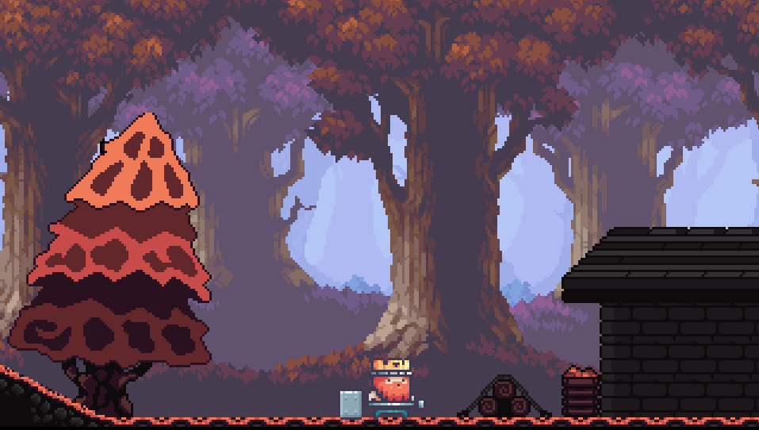
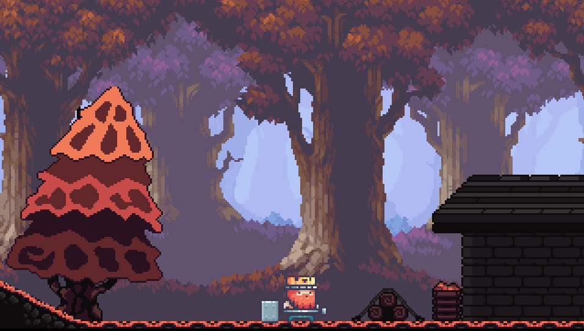

Projetos
Projeto 1 - Jogo da Velha
Projeto 2 - ChronoRPG
Projeto desenvolvido em Python, no VisualStudio. O projeto consiste em um jogo da velha com 3 modos de jogo: PvP, PvC, CvC, com placar e input de Apelido dos jogadores.
RPG desenvolvido majoritariamente em sala de aula com o uso da ferramenta Processing. Foi utilizada a lógica de programação em blocos e uso de recursos visuais já encontrados na internet para desenvolver um pequeno universo de aventura, com chefões, baús e vida do personagem.